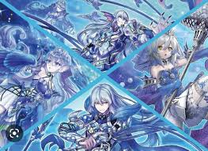
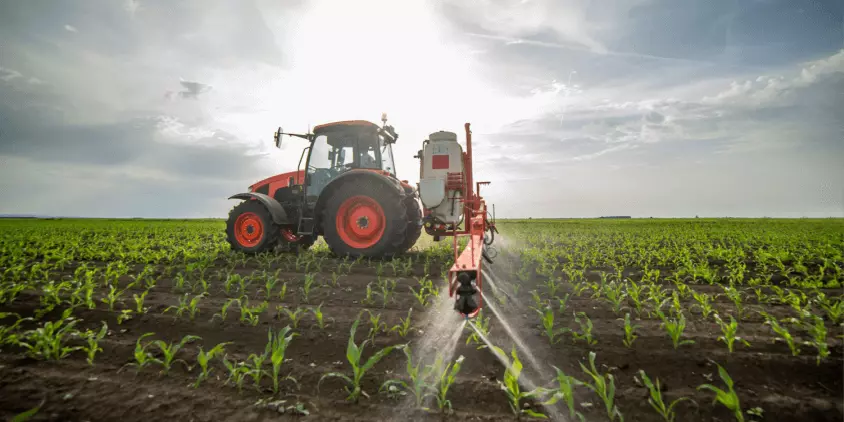

Meus projetos

"Festejando a relação campo-cidade" significa celebrar a conexão, a troca e a interdependência entre o espaço rural e o urbano, destacando como eles se complementam na cultura, economia, sustentabilidade e vida cotidiana. É uma forma de: Valorizar as raízes e tradições do campo (como música caipira, festas juninas, culinária da roça). Reconhecer a influência da cidade no campo (tecnologia, acesso a mercados, educação). Mostrar que um não existe sem o outro – o campo produz os alimentos, e a cidade consome e revende; a cidade oferece serviços, e o campo garante matéria-prima. Como se festeja essa relação? Podem ser eventos, festivais, projetos culturais ou ações cotidianas que aproximem os dois mundos, como: Festivais de música (Sertanejo Universitário mistura o rural e o urbano). Feiras de agricultura familiar (produtores rurais vendendo diretamente na cidade). Turismo rural (pessoas da cidade visitando fazendas, colhendo frutas, conhecendo o agro). Programas de TV, filmes e livros que retratam essa troca (ex.: novelas como "Pantanal" ou "O Rei do Gado"). Por que isso é importante? Combate preconceitos (ex.: a ideia de que o campo é "atrasado" ou a cidade é "fria"). Fortalecer economias locais (o pequeno produtor ganha espaço, e o urbano consome comida de verdade). Preserva tradições em um mundo cada vez mais urbanizado. Quer ideias para criar um evento, projeto ou até uma ação simples que celebre essa relação? Posso ajudar! 😊 Exemplo: Um "Dia do Campo na Cidade" com: Oficina de plantio em vasos (urbanos aprendendo com agricultores). Degustação de queijos, mel e café de pequenos produtores. Roda de viola e rap (encontro de culturas). O que acha? externas do Google Fonts.
.jpeg)
magias Artificial
Festivais Culturais – Eventos que unem tradições rurais (como música caipira, danças folclóricas e culinária típica) com expressões urbanas (como hip-hop, grafite e teatro). Exemplo: Festa do Peão de Barretos (SP) mistura rodeio (cultura rural) com shows de artistas urbanos. Festa Junina também é um ótimo exemplo, pois une tradições do interior com adaptações urbanas. Feiras de Produtos Locais – Mercados que trazem alimentos orgânicos, artesanato e produtos do campo para a cidade, fortalecendo a economia local. Exemplo: Feira da Agricultura Familiar em várias cidades brasileiras. Turismo Rural – Promover viagens para o interior, onde pessoas da cidade podem vivenciar a vida no campo (como colher frutas, andar a cavalo, conhecer plantações). Exemplo: Vinícolas no RS ou Fazendas de Café em Minas Gerais. Arte e Literatura – Valorizar obras que retratam essa relação, como: Música: "Terra, Chão e Coração" (Almir Sater) e "Chalana" (Almir Sater & Renato Teixeira). Literatura: "Grande Sertão: Veredas" (Guimarães Rosa) mostra o diálogo entre o rural e o urbano. Tecnologia e Inovação – Mostrar como o agronegócio e a vida no campo se modernizam com influência urbana (drones na agricultura, apps de gestão rural). Por que isso é importante? Quebra estereótipos (não existe "o campo atrasado" ou "a cidade fria"). Fortalecimento da economia (o campo alimenta a cidade, e a cidade leva tecnologia ao campo). Preservação de tradições em um mundo cada vez mais urbanizado.
tercâmbios Educativos e Residências Artísticas
Escolas do campo visitando museus urbanos e, ao mesmo tempo, estudantes da cidade conhecendo fazendas e comunidades rurais.
Artistas urbanos criando obras em paisagens rurais (ex.: instalações no meio de plantações) e artistas rurais expondo na cidade.
Exemplo: O Sesc tem projetos como "Arte no Rural", levando teatro e cinema para o interior.
7. Gastronomia como Ponte
Chefs urbanos usando ingredientes 100% rurais em menus especiais, destacando a origem dos alimentos.
Festivais de Comida de Roça em praças públicas das cidades.
Exemplo: O "Terra Madre" (Slow Food) conecta produtores rurais e consumidores urbanos.
8. Esportes e Tradições Híbridas
Campeonatos de rodeio em quadras urbanas adaptadas (como o Bull Riding em SP).
Futebol society com times mistos (jogadores rurais x urbanos) ou peladas em estradas de terra.
9. Mídia e Documentários
Séries e podcasts que mostram a interdependência campo-cidade:
"Aruanas" (Globo) – Discussão sobre meio rural e urbano na Amazônia.
"Sertão Velho" (YouTube) – Retrata a vida no sertão com influências urbanas.
10. Moda e Design Sustentável
Marcas urbanas usando algodão orgânico do sertão ou couro ecológico de pequenos produtores.
Desfiles em cenários rurais (ex.: Farm Rio faz campanhas em praias e florestas).
11. Tecnologia e Conectividade
Hackathons para soluções rurais-urbanas (ex.: apps para escoamento de alimentos).
YouTubers do agro (como "Sou Agro") mostrando o campo para a cidade.
12. Manifestações Políticas e Sociais
Feiras de troca de saberes entre assentamentos rurais e periferias urbanas.
Movimentos como o MST e ocupações urbanas discutindo reforma agrária e moradia.
Por que ir além?
Essa relação não é só sobre nostalgia ou contrastes, mas sobre:
✅ Soberania alimentar (quem planta alimenta quem consome).
✅ Cultura viva (o sertanejo universitário é um exemplo de fusão).
✅ Sustentabilidade (o campo preserva recursos que a cidade usa).